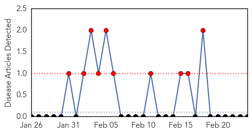
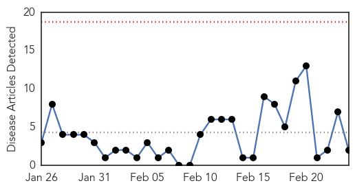
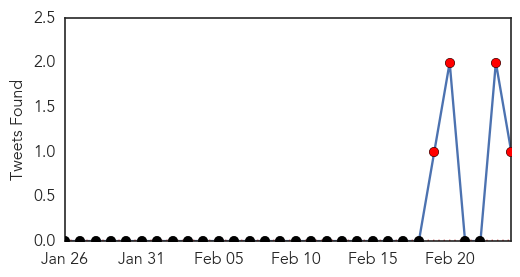
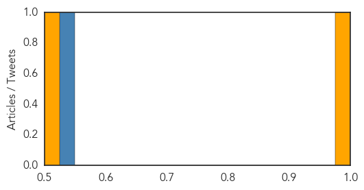

Yellow Fever
30-Day Web Trend
10 alerts, 0 warnings

30-Day Twitter Trend
0 alerts, 0 warnings

Article Locations

Article Confidences

Top Articles:
-
No articles found for Feb 24, 2015
Top Tweets:
-
No tweets found for Feb 24, 2015
Cholera
30-Day Web Trend
0 alerts, 0 warnings

30-Day Twitter Trend
8 alerts, 0 warnings

Article Locations

Article Confidences
Top Articles:
Top Tweets:
- 0.727
- Safer water systems to reduce the spread of cholera, other diseases important sign of progress in Haiti http://t.co/TfMIQB4Aio
- 0.679
- EuBiologics Licensure for New Cholera Vaccine MT: IVI & Eubiologics in the fight against Cholera: http://t.co/sg7owkVv0g
- 0.544
- RT: KenyaRedCross and IFRC respond to Cholera outbreak in Homa Bay and Migori counties targeting 53,290 HH.Read:http://t.co…
- 0.531
- Bill Clinton, the UN envoy to Haiti, says the UN brought cholera to the country. http://t.co/lcB3PE59Zf